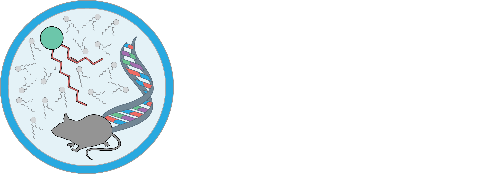

Toggle navigation

Landing Page
Manage Instruments
Control Panel
Filter QTLs By Gene...
Genes
By Genomic Position (±2Mbp)
Chromosome
Position, {{genes.filter.chromosome.start}} - {{genes.filter.chromosome.stop}} Mbp
Select A QTL to View
Select A QTL:
{{genes.options.qtls.length}} Option(s)
No QTLs found for at this locus. Please select another one.
{{chromosomeNumber}}